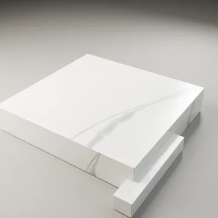
Stone / rebuilt suite
Calacatta Oro ↗
4096² maps · 2800 mm UV tile
Cycles specimen: 1024 × 1024
The surface collection / native evidence
Ten rebuilt procedural materials. Individual native 4K maps, physical scale and real Cycles appearances — ready to inspect, one image at a time.
Each material opens its own panel with all twelve channels, the fabricated specimen, the matched surface proof, physical scale and original checksums. Texture maps are 4096 × 4096. Specimen and proof renders are 1024 × 1024.

4096² maps · 2800 mm UV tile
Cycles specimen: 1024 × 1024
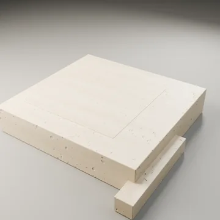
4096² maps · 650 mm UV tile
Cycles specimen: 1024 × 1024

4096² maps · 550 mm finite cut
Cycles specimen: 1024 × 1024
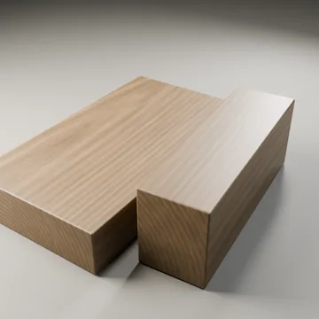
4096² maps · 450 mm finite cut
Cycles specimen: 1024 × 1024
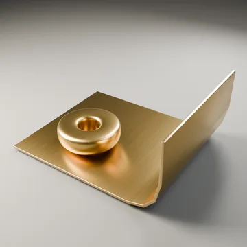
4096² maps · 200 mm UV tile
Cycles specimen: 1024 × 1024
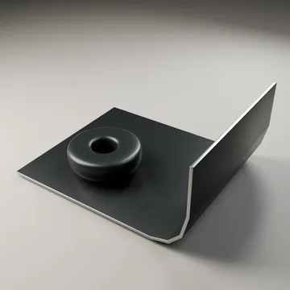
4096² maps · 250 mm UV tile
Cycles specimen: 1024 × 1024
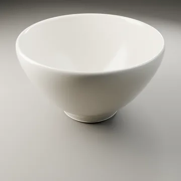
4096² maps · 240 mm UV tile
Cycles specimen: 1024 × 1024
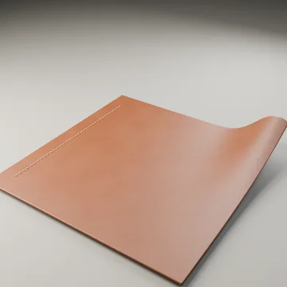
4096² maps · 180 mm UV tile
Cycles specimen: 1024 × 1024
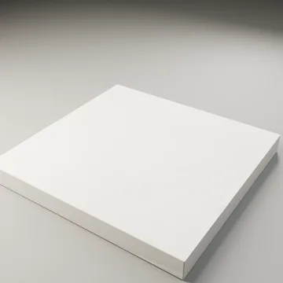
4096² maps · 650 mm UV tile
Cycles specimen: 1024 × 1024
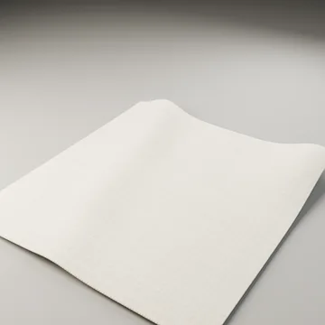
4096² maps · 85 mm UV tile
Cycles specimen: 1024 × 1024
These exact reviewed images come from the engineering registry. They do not replace the rebuilt collection or establish measured material physics.
80 × 80 × 8 mm complete part. Reviewed curved grain and edge highlight; physical calibration remains false.
Native render area 960 × 960; labeled presentation 960 × 1104. Original annotations are preserved. Archived scenes/maps are required for replay; no standalone PBR set is implied.
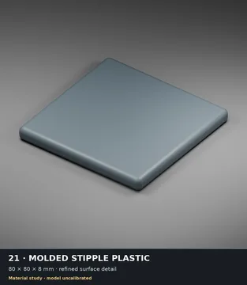
Frozen registry · Archive recovery references
{
"kind": "complete_panel",
"status": "verified_visible_improvement",
"library_version": 0,
"labeled_image_sha256": "ec921941239f9954e6440cac0d7f48a5d305e1446f63ec054e131978ab32ab27",
"canonical_render_sha256": "262604c94de4501d4a4d5ea1f463bb3c42f4db49edaba6ea66f9f3050a65ac00",
"source_scene": "shared/material-production/experiments/plastic_complete_transfer/scenes/plastic_complete_full.blend",
"source_scene_sha256": "8e45cc56927ca910d2cb2aeb7d23b35e20a3a24beea500b22df446778711e4a5",
"capture_run": "shared/material-production/runs/plastic_complete_full_r3_capture_20261006_1518",
"view_scope": "Complete original80mm rounded form with native4096 retained relief and a camera-specific geometric LOD; improved curved grain and edge highlight.",
"scope": "Verified visible detail improvement after complete,macro and second-light comparisons. Current solved recipe differs from prior90%-replication recipe. Physical model calibration remains false.",
"protected": true,
"review_receipt_sha256": "4e58558bd77230eaa0030e28ce8871c1e27d8d535b9ab861a81ab3d3f6216d4a",
"capture_recipe": {
"experiment": "plastic_complete_candidate_full_r3",
"manifest": "shared/material-production/experiments/plastic_complete_candidate_full_r3/experiment.json",
"manifest_sha256": "0eb718dabd975df7f2abee9786d035b6c9b0a4b40b8a80be1b7016103dfcfc1a",
"build_argv": [
"python3",
"-m",
"materials",
"experiment",
"plastic_complete_candidate_full_r3",
"--out",
"<fresh-build-directory>"
],
"capture_argv": [
"python3",
"-m",
"materials",
"capture",
"<fresh-build-directory>/build.json",
"--out",
"<fresh-capture-directory>",
"--mode",
"guided",
"--samples",
"128",
"--fixed-samples"
],
"dimensions_px": [
960,
960
],
"studio_lights_downward": true
}
}ec921941239f9954e6440cac0d7f48a5d305e1446f63ec054e131978ab32ab27Original native renders; no upscaling. Open an image to inspect its full resolution. Camera, sample and denoising settings remain in the render manifest.
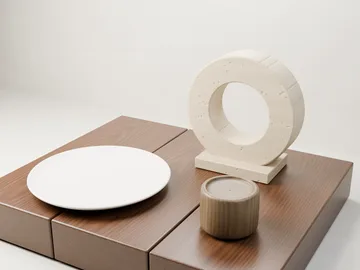
Native Cycles render · 1280 × 960
768 max samples · No denoising
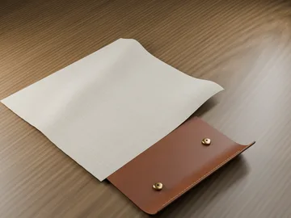
Native Cycles render · 1280 × 960
768 max samples · No denoising
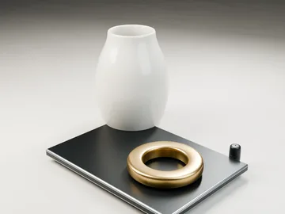
Native Cycles render · 1280 × 960
768 max samples · No denoising
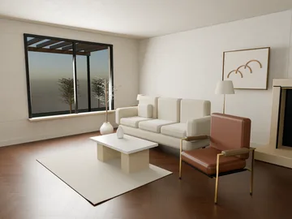
Native Cycles render · 2048 × 1536
512 max samples · Guided OIDN
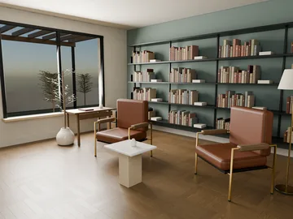
Native Cycles render · 2048 × 1536
512 max samples · Guided OIDN
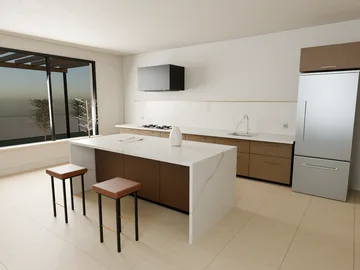
Native Cycles render · 2048 × 1536
512 max samples · Guided OIDN
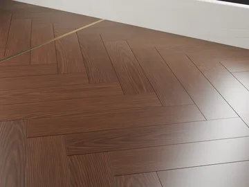
Native Cycles render · 2048 × 1536
768 max samples · No denoising
The audit began with 35 identities and now includes a separate Victorville entry. Reviewed LCD/CRT and clear PETG appearances and protected organic anchors remain recorded, but their exact selected binary images/scenes are not all present here. Concrete formation, newer carpet constructions and organic research remain experimental. No newer experiment is promoted by this gallery.
| Material | Presentation status | Recorded limits |
|---|---|---|
| Calacatta Oro / Honed Quarry Slab | Registry reference / archived inputs | retained appearance; not physically qualified scene inspection required |
| Roman Travertine / Honed Vein Cut | Registry reference / archived inputs | retained appearance; not physically qualified scene inspection required |
| American Walnut / Timeworn | Registry reference / archived inputs | retained appearance; not physically qualified scene inspection required |
| Fumed Oak / Open Grain | Registry reference / archived inputs | retained appearance; not physically qualified scene inspection required |
| Champagne Brass / Satin Brushed | Registry reference / archived inputs | retained appearance; not physically qualified native4096 verified original map set plus audited top-only normal transfer |
| Blackened Steel / Satin Oxide | Registry reference / archived inputs | retained appearance; not physically qualified scene inspection required |
| Bone Porcelain / Clear Glaze | Registry reference / archived inputs | retained appearance; not physically qualified scene inspection required |
| Saddle Leather / Full Grain | Registry reference / archived inputs | unqualified original procedural appearance reference; full180mm panel and reduced-model morphology failed Actual source, bound native4096 image hashes and completed capture references verified 2026-10-06T06:54:07.430049+00:00 |
| Lime Plaster / Troweled Skim | Registry reference / archived inputs | retained appearance; not physically qualified scene inspection required |
| Natural Linen / Frayed | Registry reference / archived inputs | retained appearance; not physically qualified scene inspection required |
| Bark / Longitudinal plates | Registry reference / archived inputs | retained appearance; not physically qualified scene inspection required |
| Lattice / Woven stainless wire | Registry reference / archived inputs | audited correction; full material-model qualification remains open Actual source, bound native4096 image hashes and completed capture references verified 2026-10-06T06:54:07.430049+00:00 |
| Lattice / Expanded diamond metal | Registry reference / archived inputs | retained appearance; not physically qualified scene inspection required |
| Chainmail / Japanese four in one | Registry reference / archived inputs | audited correction; full material-model qualification remains open Actual source, bound native4096 image hashes and completed capture references verified 2026-10-06T06:54:07.430049+00:00 |
| Engineered / Ceramic hex armor | Registry reference / archived inputs | audited same-state normal precision correction; subtle reviewed detail change; material realism unqualified All bound native4096 inputs and source/frame hashes verified 2026-10-06T09:54:06.284556+00:00 |
| Engineered / Anodized cooling fins | Registry reference / archived inputs | retained appearance; not physically qualified scene inspection required |
| Blanket / Soft brushed fleece | Registry reference / archived inputs | retained appearance; not physically qualified scene inspection required |
| LCD / RGB stripe display study | Registry reference / archived inputs | clean panel and fine display structure reviewed; analytic optics retained; full manufacturing/material-model qualification remains open Exact analytic source has no external image dependencies; source/frame/component accounting verified 2026-10-06T07:47:12.338637+00:00 |
| CRT / RGB phosphor grille study | Registry reference / archived inputs | clean panel and fine display structure reviewed; analytic optics retained; full manufacturing/material-model qualification remains open Exact analytic source has no external image dependencies; source/frame/component accounting verified 2026-10-06T07:47:12.338637+00:00 |
| Plastic / Molded satin | Registry reference / archived inputs | retained appearance; not physically qualified scene inspection required |
| Plastic / Molded stipple | Reviewed appearance / image available | retained appearance; not physically qualified scene inspection required |
| PETG / Opaque printed wall | Registry reference / archived inputs | retained appearance; not physically qualified scene inspection required |
| PETG / Clear printed wall | Registry reference / archived inputs | retained appearance; not physically qualified scene inspection required |
| Carpet / Loop wool pile | Experimental / appearance unqualified | retained appearance; not physically qualified scene inspection required |
| Tile / Glazed ceramic and grout | Registry reference / archived inputs | retained appearance; not physically qualified scene inspection required |
| Tile / Honed terrazzo and grout | Registry reference / archived inputs | retained appearance; not physically qualified scene inspection required |
| Grass / Blade and thatch tuft | Registry reference / archived inputs | retained appearance; not physically qualified scene inspection required |
| Asphalt / Rolled mineral aggregate | Registry reference / archived inputs | User-selected reviewed fracture appearance; bright beadlike fines and polygonal plates remain; not physically calibrated Generate native maps and scene from the pinned public source; full render-relevant contract checked independently of blend-file bytes |
| Concrete / Cast | Experimental / appearance unqualified | retained appearance; not physically qualified Actual selected scene inspection required; older native map set is not assumed to be the active binding. |
| Concrete / Board Formed | Experimental / appearance unqualified | retained appearance; not physically qualified scene inspection required |
| Concrete / Brushed | Experimental / appearance unqualified | retained appearance; not physically qualified scene inspection required |
| Concrete / Polished | Experimental / appearance unqualified | retained selected authored polished concrete; user realism gate remains failed native4096 map manifest with hashes |
| Concrete / Exposed Aggregate | Experimental / appearance unqualified | retained appearance; not physically qualified scene inspection required |
| Concrete / Weathered | Experimental / appearance unqualified | retained appearance; not physically qualified scene inspection required |
| Cement paste / Troweled neat binder | Experimental / appearance unqualified | retained appearance; not physically qualified scene inspection required |
| Victorville / Granitic desert ground | Registry reference / archived inputs | User-approved R5D ground appearance; not physically calibrated or site-measured Source included; exact accepted scene must be restored separately for strict selected capture |
Full audit status · Exact selected registry · Archived-input recovery inventory
Native image links serve unchanged source bytes. Preview WebPs are downsampled display derivatives. A 4K map is never described as a 4K beauty render.
Per-image SHA-256 & dimensions ↗Saved Blender scenes retain cameras, lighting, geometry and relative texture paths. Scene replay requires the materials directory alongside the Blender directory.
Specimen scenes · Still lifes · ArchitectureRebuilt studies, engineering selections and their accepted baselines remain distinct.
Study review · PBR import guide · Distribution receipt · Original suite checksums